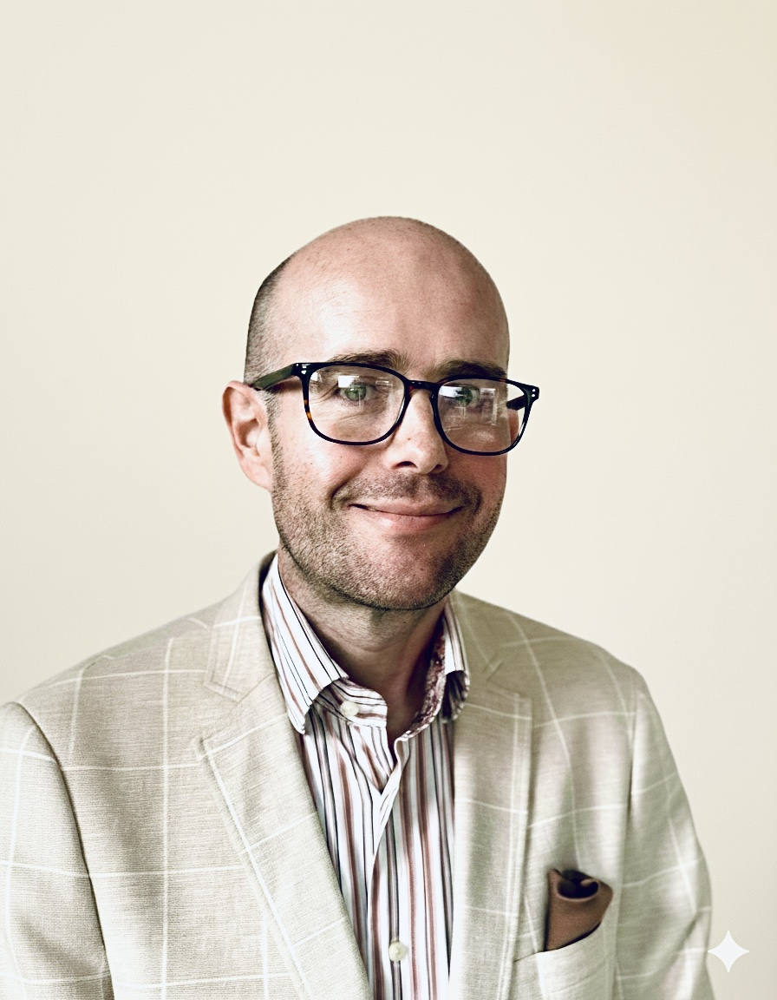

NOK, Vitalys, WeightWorks, OCA, CON en Baria Nederland eerlijk naast elkaar. Wachttijden, nazorg, operaties en groepsaanpak, op basis van openbare kliniekeninformatie en BariBuddies-ervaringen.

Ik begon zelf bij Vitalys. Na mijn gastric bypass in januari 2024 ben ik naar Amsterdam verhuisd en zit ik nu voor mijn nazorg bij Baria Nederland, onderdeel van het Spaarne Gasthuis. Dat switchen van aanbieder leerde me dat de keuze voor een kliniek meer is dan alleen de naam op het briefpapier. De locatie, de groepsaanpak en de relatie met je team wegen minstens zo zwaar.
David Gans, Dutch Goose. Gastric bypass jan. 2024.Scroll naar rechts op mobiel. Gele rijen zijn de meest bepalende factoren bij je keuze.
| NOK Grootst netwerk | Vitalys | WeightWorks | OCA (OLVG) | CON (Frisius MC) | Baria Nederland (Spaarne Gasthuis) |
|
|---|---|---|---|---|---|---|
| Algemeen | ||||||
| Type | Zelfstandige kliniek (screent + begeleidt, opereert via partnerziekehuizen) | Kliniek binnen topziekenhuis Rijnstate | Zelfstandige privékliniek (alles eigen) | Afdeling van OLVG ziekenhuis Amsterdam | Centrum binnen STZ-ziekenhuis Frisius MC | Centrum in STZ-ziekenhuis (Spaarne Gasthuis). Team heeft roots in MC Slotervaart (tot 2018 grootste centrum voor maagverkleining in NL). |
| Vestigingen | 11 locaties landelijk (Amsterdam, Arnhem, Beverwijk, Den Haag, Dordrecht, Gouda, Hoogeveen, Heerlen, Nieuwegein, Terneuzen, Venlo) | Arnhem (Velp) en Hoogeveen. Operaties in Rijnstate Arnhem + Gelderse Vallei Ede. | Operaties en nazorg in Amersfoort. Screening via 13 regiolocaties. | 1 locatie: OLVG West Amsterdam | Hoofdlocatie Leeuwarden (Frisius MC). CON zit niet in de overige poliklinieken van Frisius. | 1 locatie (Hoofddorp, Spaarne Gasthuis) + polikliniek Amsterdam UMC |
| Ziekenhuispartner | Diverse ziekenhuizen (NOK-netwerk) | Rijnstate Ziekenhuis Arnhem | Eigen kliniek Amersfoort + samenwerking Meander Ziekenhuis Amersfoort (10 min verderop) | OLVG West Amsterdam | MCL Leeuwarden | Spaarne Gasthuis Hoofddorp + Amsterdam UMC |
| Regio | Landelijk dekkend | Gelderland / Utrecht / Overijssel | Landelijk (13 regio's) | Amsterdam en omgeving | Noord-Nederland (Friesland, Groningen, Drenthe) | Groot Amsterdam / Noord-Holland |
| Alles op 1 locatie | ❌ Kliniek en ziekenhuis apart (wel vaak vlakbij) | ✅ Grotendeels in Arnhem (kliniek + Rijnstate naast elkaar) | ❌ Screening/nazorg in regio, operatie in Amersfoort | ✅ | ✅ | ✅ |
| Volume per jaar | 5.000+ patiënten begeleid (Velp alleen al) | ~1.500 operaties/jaar | Niet gepubliceerd (claimt grootste volume NL, DATO 2024) | 500+ dagbehandelingen alleen al. Totaal niet gepubliceerd. | ~900 operaties/jaar | 719 operaties/jaar (DATO 2024) |
| Bijzonderheden | Grootste netwerk NL. Multidisciplinair team overlegt dagelijks. | IFSO-keurmerk. Vitalys-app. Expertise via Rijnstate. | Snelste traject NL. Mini bypass als voorkeur. Niet alle verzekeraars. | Enige kliniek in NL met dagbehandeling als standaard (~40%). Expert in complexe revisies. | Beste DATO-cijfers. IFSO-keurmerk. IC in huis. | 24/7 bariatrisch chirurg beschikbaar. Levenslange nazorg. Samenwerking Amsterdam UMC. |
| Operaties | ||||||
| Gastric bypass | ✅ | ✅ | ✅ | ✅ | ✅ | ✅ |
| Mini gastric bypass (OAGB) | ❌ | ❌ | ✅ (voorkeur van WeightWorks) | ✅ | ✅ | ❌ (niet vermeld) |
| Gastric sleeve | ✅ (alleen bij BMI > 50) | ✅ | ✅ | ✅ | ✅ | ✅ |
| SADI | ✅ (bij extreem hoog BMI) | ✅ | ❌ | ✅ | ❌ Geen SADI. CON voert 3 operaties uit: bypass, sleeve en mini bypass. Sleeve wordt omgezet naar bypass. | ❌ (niet vermeld) |
| Revisie-/heroperaties | ✅ | ✅ | ✅ | ✅ (specialist complexe revisies) | ✅ | ❌ (niet vermeld) |
| Dagbehandeling | ❌ | ❌ (1 nacht) | Varieert — niet altijd een overnachting nodig | ✅ (~40% van patiënten, enige kliniek in NL) | ✅ Voorkeur voor dagbehandeling als je voor 12 uur geopereerd bent én iemand thuis hebt die voor je zorgt. | ❌ (1 nacht) |
| Wachttijd & planning | ||||||
| Wachttijd tot operatie | Varieert per vestiging. Niet gepubliceerd. Kan lang zijn. Check ZorgkaartNederland. | Geen wachttijd (expliciet op website) | 0 weken (eerste screening én van goedkeuring tot operatie). Actueel op website, wordt elke 2 weken bijgewerkt. | Geen wachttijd (expliciet op website) | Screening snel. Operatie 6-12 weken na eerste leefstijlbijeenkomst. | Geen wachttijd |
| Doorlooptijd totaal | Varieert per vestiging | Snel: screening tot operatie in weken na verwijzing | 10-12 weken van aanmelding tot operatie | Snel (geen wachttijd) | Niet gepubliceerd | Binnen 5 werkdagen eerste afspraak |
| Voortraject | ||||||
| Groepsbijeenkomsten voortraject | ✅ 4 sessies (arts, diëtist, psycholoog, bewegingskundige) | ✅ 4-5 wekelijkse groepssessies van 1,5 uur. Vaste groep lotgenoten. | ❌ Volledig individueel. Geen groepssessies. | Via NOK-begeleiders (begeleiding uitbesteed aan NOK) | ✅ 1 verplichte bijeenkomst voor operatie + start leefstijlprogramma | ❌ Volledig individueel. Geen verplichte groepsgesprekken. |
| Pre-dieet verplicht | ✅ 2-3 weken eiwitrijk/koolhydraatarm. Niet houden = operatie gaat niet door. | In onderzoek (PREBA-studie bij Rijnstate). Nog geen standaard pre-dieet. Wel voedingsadvies via app. | ❌ Geen pre-dieet | ✅ Via Ksyos-app + diëtist | ✅ 2-3 weken eiwitrijk/koolhydraatarm | Niet gepubliceerd |
| App / digitale ondersteuning | Niet vermeld | ✅ Eigen Vitalys-app (modules, vragen, monitoring). Toegang vanaf screening. | Geen app, wel online portaal. Afspraken fysiek of via videocall. | ✅ Ksyos-app (digitaal ziekenhuis). Pre-op fit-programma en herstel. | ✅ MijnMCL (berichten naar coaches, digitale informatie) | Niet vermeld |
| Individueel traject mogelijk | Nee (altijd groep) | Ja, bij uitzondering (Vitalys bepaalt) | Altijd individueel (dit is het USP) | Niet van toepassing (begeleiding via NOK) | Mogelijk bij hoge uitzondering. | Altijd individueel (USP) |
| Natraject | ||||||
| Groepsbijeenkomsten natraject | ✅ 12 groepsbijeenkomsten in 1,5 jaar (dagdelen). Daarna 2x per halfjaar, dan jaarlijks. | ✅ 6 groepssessies van 45-90 min. Zelfde groep + zorgverleners als voortraject. | ❌ Volledig individueel. | Via NOK | ✅ 6 groepsbijeenkomsten verspreid over 2 jaar (diëtist, psycholoog, doktersassistent) | ❌ Individueel |
| Duur intensieve nazorg | 1,5 jaar intensief | 1,5 jaar intensief | 1 jaar | 5 jaar totaal behandelprogramma | 2 jaar | Jaarlijkse controles, minimaal 5 jaar |
| Totale follow-up | 5 jaar (daarna overdracht huisarts) | 5 jaar | 5 jaar | 5 jaar | 5 jaar | Levenslang. "24/7 terecht bij ons gespecialiseerde team" (expliciet op website) |
| Plastisch chirurg | Externe verwijzing (Nederlandse Contourkliniek) | Via Rijnstate | Via Essenza Clinics (20% korting voor WeightWorks-patiënten) | Via OLVG | Via Frisius MC | Via Spaarne Gasthuis |
| Vergoeding | ||||||
| Alle verzekeraars gecontracteerd | ✅ Alle grote verzekeraars | ✅ Alle verzekeraars | ✅ Vergoed via basisverzekering bij alle verzekeraars. Soms zelf indienen bij verzekeraar. | ✅ OLVG heeft brede contracten | ✅ Vrijwel alle verzekeraars. Let op: geen contract met Caresq. | ✅ (STZ-ziekenhuis, breed gecontracteerd) |
| Kosten bij zelf betalen | Niet gepubliceerd | Niet gepubliceerd | €10.700 (gepubliceerd op website) | Niet gepubliceerd | Niet gepubliceerd | Niet gepubliceerd |
| Eigen risico 2026 | €385 | €385 | €385 | €385 | €385 | €385 |
| Kwaliteit & accreditatie | ||||||
| IFSO-accreditatie | Niet vermeld (wel voor partnerziekehuizen) | ✅ IFSO Centre of Excellence | ❌ (ISO 9001 gecertificeerd) | ✅ IFSO | ✅ IFSO Centre of Excellence | ❌ (niet vermeld) |
| Wetenschappelijk onderzoek | Beperkt | Via Rijnstate | Nee | ✅ Actief. Pioneer dagbehandeling. | ✅ Actief. Eigen onderzoeksteam. DATO 2024: 99,0% bypass-patiënten voldoende afgevallen binnen 2 jaar, 0,9% complicaties. | ✅ Samenwerking Amsterdam UMC. DATO 2024: 719 operaties. Bypass: 95,0% TWL≥20% na 2 jaar. Complicaties: 0,7%. |
Bronnen: klinieksites, ZorgkaartNederland, NZa, ziekenhuischeck.nl, BariBuddies community (maart 2026). Wachttijden veranderen voortdurend. Controleer altijd de actuele situatie bij de kliniek zelf.
Zeven situaties die we veel voorbij zien komen in de BariBuddies community, met een eerlijk advies op basis van de data hierboven.
WeightWorks heeft een doorlooptijd van 10-12 weken van aanmelding tot operatie en geen wachttijd. OCA heeft ook geen wachttijd en biedt als enige kliniek dagbehandeling aan. Beide zijn aanzienlijk sneller dan het gemiddelde.
WeightWorks of OCANOK werkt met 12 groepsbijeenkomsten verspreid over 1,5 jaar. Bij Vitalys heb je dezelfde vaste groep door het hele traject, voor en na de operatie. Beide klinieken zetten lotgenotencontact centraal in het programma.
NOK of VitalysCON in het Frisius MC in Leeuwarden is de enige volwaardige gespecialiseerde kliniek in Noord-Nederland. Maanden lang reizen voor groepssessies weegt zwaar. Ze hebben poliklinieken in Steenwijk, Joure, Harlingen, Lemmer en Heerenveen.
CON (Frisius MC Leeuwarden)OCA (Obesitas Centrum Amsterdam, OLVG) is de enige kliniek in Nederland die dagbehandeling standaard aanbiedt. Ongeveer 40% van hun patiënten gaat dezelfde dag nog naar huis. Niet voor iedereen geschikt, bespreek het met je arts.
OCA (OLVG Amsterdam)OCA is specialist in complexe revisie-operaties. Ook CON en NOK voeren revisies uit. WeightWorks vermeldt dit niet op hun website. Voor zeer complexe gevallen zijn ook Catharina Ziekenhuis Eindhoven en Zuyderland Heerlen opties.
OCA, CON of NOKWeightWorks heeft contracten met slechts 5 verzekeraars. NOK, Vitalys, OCA en CON zijn alle breed gecontracteerd. Controleer altijd je polis en bel je verzekeraar voor zekerheid. Bij CON: geen contract met Caresq.
NOK, Vitalys, OCA of CONNOK biedt sleeve aan bij BMI boven 50 en SADI bij extreem hoog BMI. OCA en CON voeren ook SADI uit. WeightWorks doet geen SADI. Voor de meest complexe gevallen met hoog BMI zijn OCA, CON en ETZ Tilburg de sterkste opties.
OCA, CON of NOKBaria Nederland in Hoofddorp (Spaarne Gasthuis) werkt volledig individueel, zonder verplichte groepsgesprekken. Het team heeft zijn roots in het MC Slotervaart, dat tot 2018 het grootste centrum voor maagverkleining in Nederland was. Persoonlijk contact, warme sfeer, vlakbij Amsterdam.
Baria Nederland (Spaarne Gasthuis)Wachttijden veranderen snel. Schrijf je in bij twee of drie klinieken en kies daarna. Je kunt altijd later afzeggen. Aanmelden kost je niets.
Je gaat 10 tot 15 keer of meer op en neer naar de kliniek voor het voortraject. Een kliniek die 90 minuten rijden is, voelt na de derde keer anders dan de eerste.
In onze community zitten mensen van alle klinieken. Ehrlijke, persoonlijke verhalen zeggen meer dan een website. Stel je vraag in WhatsApp, Facebook of Discord.
Ja. Je hebt vrije ziekenhuiskeuze in Nederland. Je huisarts verwijst je door, maar jij mag aangeven naar welke kliniek je wilt. Controleer wel of de kliniek gecontracteerd is met jouw zorgverzekeraar, dit kan per jaar en per verzekeraar verschillen.
Niet alle verzekeraars. WeightWorks heeft contracten met DSW, Stad Holland, ASR, ONVZ en Zorg en Zekerheid. Bij andere verzekeraars dien je de factuur zelf in en bekijk je of je restitutie krijgt. De kosten zijn gepubliceerd op de website van WeightWorks: 10.700 euro in 2026. Controleer dit altijd bij je verzekeraar voordat je aanmeldt.
Klinieken zoals NOK en WeightWorks richten zich uitsluitend op maagverkleining. Ziekenhuizen zoals OCA (OLVG) en CON (Frisius MC) hebben een gespecialiseerde afdeling binnen een groter ziekenhuis. Het voordeel van een ziekenhuis is dat specialisten en IC-afdeling direct beschikbaar zijn bij complicaties. Vitalys zit er tussenin: eigen kliniek, maar operaties via Rijnstate naast de deur.
Ja, dit kan. Ik heb het zelf gedaan, van NOK naar WeightWorks. Het kost tijd en je moet een deel van het voortraject opnieuw doorlopen bij de nieuwe kliniek. Doe het niet lichtvaardig, maar als de situatie het vraagt is het goed mogelijk. In BariBuddies zijn meerdere mensen die dit hebben gedaan.
De tabel geeft een beeld op basis van openbare informatie van de klinieken zelf (maart 2026). Wachttijden veranderen voortdurend, soms per maand. Bel of mail de kliniek altijd zelf voor de actuele wachttijd op het moment dat jij aanmeldt. Voor klinieken zonder gepubliceerde wachttijd (NOK, CON) kun je ook ZorgkaartNederland raadplegen voor recente ervaringen.